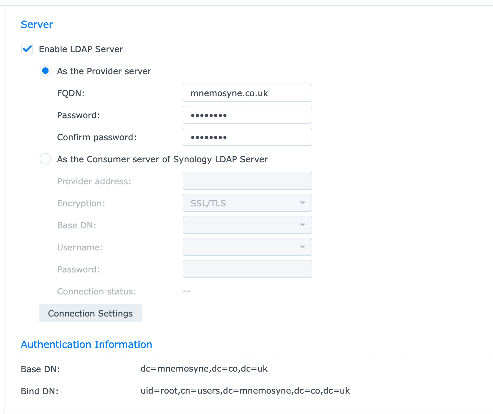

One of the reasons for the dearth of intended posts in January has been an exercise in trying to demonstrate that the RaspberryPi can actually do bioinformatics. We’ll have a look at symbioinfo in an upcoming blogpost - this could be a justification for genomics analyses on a humble RaspberryPi.
As I have gained experience in getting software to compile on the RaspberryPi
I have tried to boost performance by running more than one Pi at the same time.
This is a satisfactory solution but using git pull and git push to
synchronise data between devices that are but a few centimeters apart seems
counter intuitive.
What I would appreciate would be a shared home filesystem across these computers and I guess while we’re doing that there are a few other computers that might also benefit from this? The mission for this snowy Sunday afternoon is therefore to establish a shared home filesystem across initially just a couple of Pi and do document this a brief blogpost.
LDAP (Lightweight Directory Access Protocol) is an open and cross platform protocol used for directory services authentication. LDAP is often used to provide a central service for the storage of usernames and passwords. The first step in this afternoon’s mission is thus to establish an LDAP server on the home network.
Earlier we looked at a disk update on a largely unused Synology server. Synology provide their own implementation of an LDAP server - we’ll use this RS816 device to share both LDAP and NFS for this exercise.
Creating an LDAP server really is as simple as entering an FQDN and a password
and creating a user. I have created a user called dummy with an equally
nonsensical password that we’ll use to demonstrate proof-of-concept. While you
are logged into the Synology device also ensure that home directories are
created for the LDAP users.
It is also probably worth having a quick check here that the LDAP server is actually spitting out the expected content
ldapsearch -x -LLL -h 192.168.1.119 \
-D "uid=root,cn=users,dc=mnemosyne,dc=co,dc=uk" \
-w topsecret
I am not sure that I really understand or have the patience to get to grips with SELinux. I am going to disable it …
sudo vim /etc/sysconfig/selinux
For this afternoon’s play we have a clean install of Fedora 33 on a RaspPi
that has been assigned an IP address of 192.168.1.235.
Let’s update the system and install a couple of LDAP client pacakges
sudo yum update
sudo yum install openldap-clients \
sssd-ldap \
sssd-tools \
oddjob-mkhomedir \
authselect
The next step is to define our LDAP server. Using our preferred editor we would
like to edit the file /etc/openldap/ldap.conf to include the BASE and URI
for our LDAP server - I’ll use the vim editor here and include the two lines
as shown below.
sudo vim /etc/openldap/ldap.conf
BASE dc=mnemosyne,dc=co,dc=uk
URI ldap://ldap.mnemosyne.co.uk
It is CRITICAL to note here that LDAP only consumes URI with FQDN - an IP
address will not cut the mustard. I am not running a DNS at home so for things
to work intelligently (rather than throwing assorted errors) we should add an
entry to our /etc/hosts file to identify the LDAP server
echo "192.168.1.119 ldap ldap.mnemosyne.co.uk" | \
sudo tee -a /etc/hosts
And now for the most important file - /etc/sssd/sssd.conf - let’s open this
up using vim (or equivalent) and add the following lines
[sssd]
config_file_version = 2
services = nss, pam
domains = default
[nss]
[pam]
[domain/default]
ldap_schema = rfc2307bis
ldap_id_use_start_tls = False
cache_credentials = False
ldap_search_base = dc=mnemosyne,dc=co,dc=uk
id_provider = ldap
auth_provider = ldap
chpass_provider = ldap
access_provider = ldap
sudo_provider = ldap
ldap_uri = ldap://ldap.mnemosyne.co.uk
ldap_default_bind_dn = uid=root,cn=users,dc=mnemosyne,dc=co,dc=uk
ldap_default_authtok = topsecret
ldap_search_timeout = 50
ldap_network_timeout = 60
ldap_access_order = filter
ldap_access_filter = (objectClass=posixAccount)
override_shell = /bin/bash
ldap_auth_disable_tls_never_use_in_production = True
We are almost done for part 1.
When a user defined in the LDAP database logs into a given computer for the
first time it is likely that the /home/<user>/ directory has not been
created. The command below adds a line to the /etc/pam.d/system-auth file
that instructs a home directory to be created if it does not already exist!
echo "session optional pam_oddjob_mkhomedir.so skel=/etc/skel/ umask=0022" | \
sudo tee -a /etc/pam.d/system-auth
Now let’s start the associated system service (and ensure that it is kept enabled at system boot)
sudo systemctl start oddjobd
sudo systemctl enable oddjobd
We have done a load of cut-and-paste here and have transposed some of my thoughts and settings into something that hopefully works for a shiny new computer system … Let’s now make sure that it all works!
sssctl config-check is a program that performs some sanity checking on the
sssd configuration files. Give this a quick run and watch the error (the files
that we have created have the wrong permissions so a quick fix is required)
sudo sssctl config-check
File ownership and permissions check failed. Expected root:root and 0600.
sudo chmod 600 -R /etc/sssd/sssd.conf
and we can now start the system with the new configuration
sudo systemctl restart sssd
sudo systemctl enable sssd
We can now check to see if we can discover our <dummy> user and can test the
logon (and home directory creation) of our RaspberryPi.
$ id dummy
uid=1000001(dummy) gid=1000001(users) groups=1000001(users)
Looking great! We have connected to the LDAP server on the Synology device and
have identified the <dummy> user. Furthermore our LDAP user can now logon to
the system and the $home directory is available and ready to go.
This Sunday afternoon project didn’t quite go as far as I had hoped - it has been several years (2016 was the last time) that I performed such a workflow and my memory and lack of coherent notes made for slower than expected progress. I see three obvious follow on blogposts to cover further RaspberryPi LDAP mischief
ldap_auth_disable_tls_never_use_in_production flag)Watch this space; and I’ll include these updates.